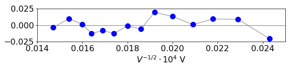
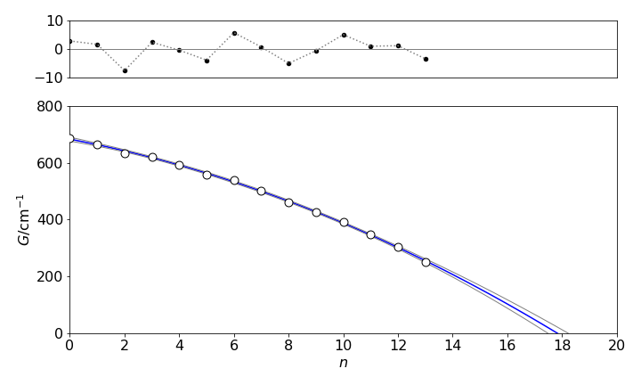

Solutions Q1 -11
Contents
Solutions Q1 -11#
Q1 answer#
Differentiating produces
Substituting for \(d\) gives \(\displaystyle \sigma_d^2=d^2\left(\frac{1}{\tan^2(\theta)}\sigma_\theta^2+\frac{1}{4V}\sigma_V^2\right)\).
Q2 answer#
(a) Rearranging and defining \(Q\) as the ratio, produces \(\displaystyle Q\equiv \frac{a_{red}}{a_{ox}}e^{-(E-E^\ominus)nF/RT}\) and differentiating with respect to \(E\) and \(T\) produces with W=
Therefore the result is
(b) The error is smallest at the midpoint when \(Q=1\) or \(a_{red} = a_{ox}\) because the log is zero.
Q3 answer#
The variance is therefore
Multiplying out the matrices and simplifying using \(\cos^2(\theta)+\sin^2(\theta)=1\)
Using equation 24, the errors are
which can be converted to terms in \(x\) and \(y\). The errors increase generally with \(r\) and the \(x\) and \(y\) errors are The angular terms are zero at \(n\pi/4\), if \(n\) is an integer, and at radius \(r = \sigma_r /\sigma_\theta\).
Q4 answer#
Starting, as in the text, the normal equations are produced by minimizing the \(\chi^2\).
or
The variance in the slope is found using error propagation equation 20 with the weighting \(\sigma_i^2 = 1/w_i\),
Q5 answer#
Expanding out the left-hand term gives
Substituting for \(\langle x\rangle\) produces (where for clarity the subscripts on the summations are omitted)
Q6 answer#
(a) The slope is \(b = S_{xy} /S_{xx}\) but only the numerator depends on y so it is easier work with \(S_{xy}=\sum_i^nw_iy_i(x_i-\langle x\rangle)\) to begin with. Differentiating with \(y_i\) gives,
which is one of \(i\) terms. The formula requires that each term is squared and multiplied by \(\sigma_i^2 \equiv 1/w_i\) and then the sum is formed which gives \(\sum_i^n w_i^2(x_i-\langle x\rangle)^2/w_i\).
The variance is therefore,
(b) The intercept is \(a=\langle y\rangle -b\langle x\rangle\) where \(b\) is the slope. The variance of this is the sum of the two terms, \(\sigma^2 = \sigma_{\langle y\rangle}^2 + \sigma_{b\langle x\rangle}^2\). The value for the slope \(b\) is given in (a) and here becomes \(\sigma_{b\langle x\rangle}^2=\langle x\rangle^2/S_{xx}\).
Differentiating \(\langle y\rangle\) produces
This is squared, multiplied by the variance, and then summed, which produces \(\displaystyle \sum\left(\frac{w_i}{\sum w_i}\right)^2=\frac{w_i}{\sum w_i}\)
Combining both variances gives \(\displaystyle \sigma^2=\frac{1}{\sum_i w_i}+\frac{\langle x\rangle^2}{S_{xx}}\) which can be simplified to \(\displaystyle \sigma^2=\frac{\sum_i w_ix_i^2}{S_{xx}\sum_i w_i}\).
Q7 answer#
(a) Using the algorithm with unit weights, since none is given with the data, produces
Slope = \(4.55 \pm 0.24\) Intercept = \(0.0021 \pm 0.0046\)
at the \(95\) % confidence level. Since the confidence on the intercept is slightly smaller than the intercept itself, this does not cover zero at \(95\)% confidence, so it can be assumed that there is a small systematic error on the angle. The fit is acceptable as it is clear from the data that \(x\) has a strong effect on \(y\). This is confirmed by the \(F_0\) statistic from the ANOVA test which is \(1685\) and greatly exceeds the statistic from the \(F\) - distribution at the \(99\)% level which is \(f (0.01, 1, n - 2) = 8.86\).
The reduced residuals (equation 34) that are shown in the figure do not show any systematic deviation from zero. Because the weighting is unknown, the \(\chi^2 = 1.4\cdot 10^{-6}\) is only relative and has no quantitative meaning, however, equation 35 produces a value \(Q = 1\) which is acceptable, the limit being > 0.1 and it confirms the obvious conclusion that the straight line fit describes the data.

Figure 18. Residuals
(b) The slope is \(s = h/(d\sqrt{8em})\) and lattice spacing is therefore \(d = h/(s\sqrt{8em}) = 0.135\) nm. The error on the spacing is calculated using equation 20 and is \(\displaystyle \sigma_d=\frac{h\sigma_s}{s^2\sqrt{8em}}=0.007\) nm.
Q8 answer#
(a) Using weighted least squares with \(w=1/\sigma^2\),the slope and intercept at the \(95\,%\) level are
slope = \(200 \pm 17\) and intercept =\( 0.998 \pm 0.06\).
which confirms that the intercept is \(1\) within error. The \(\chi^2\) for the fit is \(0.55\) and the \(Q\) value (equation 35) is 0.004, which is small but acceptable.
(b) The quenching rate constant is \(k_{SV}/\tau=220/18\cdot 10^{-9}= 1.22\cdot 10^{10}\;\mathrm{ dm^3 mol^{-1} s^{-1} }\). From the least squares the standard deviation on the slope (not the \(95\,%\) quoted above) is \(\sigma_{SV} =5.4\). The error on the rate constant is then
which produces \(\sigma=0.074\cdot 10^{10} \;\mathrm{ dm^3 mol^{-1} s^{-1} }\) and being cautious, could be rounded down to \(\sigma=0.07\cdot 10^{10} \;\mathrm{ dm^3 mol^{-1} s^{-1} }\) as the rate constant is only given to two decimal places.
Q9 answer#
(a) The P branch occurs below about \(2880\;\mathrm{ cm^{-1} }\)and the R branch above this. The first P line is the \(J'' = 1 \to J' = 0\) transition and is at \(\approx 2860\;\mathrm{ cm^{-1} }\) and the first R branch line \(J''=0\to j'=1\) is at \(\approx 2900\;\mathrm{ cm^{-1} }\). The lines converge in the R branch and diverge in the P because the average bond length is greater in the upper vibrational level than in the lower one.
(b) The double lines are due to the presence of the two isotopes of chlorine, 35 and 37. This is confirmed because the less intense line is always at smaller wavenumber than the more intense one and is in a constant ratio. If the lines are due to two different types of molecules and not isotopes, it is most unlikely that the vibrational frequency could be almost the same. However, given that this has occurred, the spectrum is then most likely to be more symmetrical, that is the less intense lines would be at smaller wavenumber one side of the spectrum and longer on the other or vice versa because the two molecules would have different bond lengths and hence rotational constants. Additionally, the very small spacing between each pair of lines would be expected to differ across the spectrum because two different molecules are unlikely to have exactly the same shaped potential.
Because of the vibrational dependence of \(B\) as \(J\) increases, the lines in the vibration-rotation spectrum are not evenly spaced and bunch up in the R branch, and become further apart in the P branch.
(c) The energies of the two levels (expressed in wavenumbers ) are:
(d) The wavenumber of the transition from \(( n=0,J') \to (n = 1, J')\), is given by,
(e) If \(J'=J''+1\) ,i.e. \(\Delta J=+1\), then \(v=2BJ+(1-2x_e)v_e\) whilst if \(J'' = J' + 1\), i.e. \(\Delta J = -1\), then \(v = -2BJ + (1 - 2x_e)v_e\). The spectrum therefore consists of equally spaced lines, the spacing being \(2B\), on each side of the origin at \(v_e(1 - 2x_e)\).
(f) Using the rotational constant \(B_n\), the transition frequency \(n = 0 \to n = 1\) becomes
For the R branch
and for the P branch
which differ only in a sign before the term in \(2J\).
(g) Changing the notation by using \(m\) to represent any \(J\),the lines in both branches can be represented by
where \(m = +1, +2, +3 \cdots\) for the R branch, and \(-1, -2, -3 \cdots\) for the P branch. The difference in \(m\) is \(v_m + v_{-m}\) and is found by substituting \(m\) for \(-m\) and is
so that a plot of \(v_m + v_{-m}\) against \(m^2\) is a straight line with slope \(-2\alpha_e\) and intercept \(2v_0 = 2v_e(1 - 2x_e)\) thus enabling \(v_e\) and \(\alpha_e\) to be found.
(h,i) Note that the weighting is added as \(1/\sigma^2\). Using the weighted least squares Algorithm 2, the data produces
Using the error propagation formula, the error on the force constant is calculated using \(\sigma_k = 2(2\pi c)^2v_e \mu\sigma_{v_e}\).
The \(\chi^2\) from either data set is close enough to 1 to be acceptable. In fact, the fit to the data is almost perfect and although the residual plots are slightly curved, their deviation from zero is very small. The original data is accurate to \(0.08\mathrm{ cm^{-1} }\) the slope and intercept arise from twelve points so, approximately, this could be reduced by \(\sqrt{12}\) or to about \(0.02\mathrm{ cm^{-1} }\) and therefore the error in the calculated frequency can be expected to be \(0.02\) which is, approximately, what it is.
The two value for the force constant differ by slightly more than their respective errors, and this is is most likely (a) underestimation of the true error and so accuracy of the spectral lines wavenumbers and, or (b) due to the model used not containing terms describing small anharmonic interactions.
Q10 answer#
if normalised \(\sum_{k=0}^\infty p(k,\mu)=1\), hence the sum is
where the definition of the exponential as a series is used.
Using the formula for the mean, in the limit \(n\to\infty\) is
where in the expansion the first term with \(k=0\) produces \((-1)! = \infty\) and the expansion is the exponential in the limit \(n \to \infty\).
The second moment is calculated in a similar way
which proves to be a difficult summation, however, using \(k^2=k(k-1) +k\) and using the answer \(\langle k\rangle =\mu\) makes this simpler.
where the values with \(k=0,1\) are zero so the summation can start at \(k=2\). Letting \(m=k-2\) then produces
making \(\langle k^2\rangle= \mu^2+\mu\).
The variance is \(\sigma^2 = \langle k^2\rangle -\langle k\rangle^2 =\mu^2+\mu-\mu^2=\mu\)
Q11 answer#
Plotting the data and fitting by hand with the Poisson distribution gave the plot below in which the fit to the data appears to be good.
Figure 19. Plot of number of cavalry units vs the number of deaths. The red line is the Poisson fit with \(\mu=0.61\).
The weighting for the \(\chi^2\) is \(w_i=1/y_i\) where \(y_i\) is the observed number of cavalry units. However, some of these are zero so that this would cause division by zero, therefore either the zero values should be ignored of the calculated values from the Poisson distribution used instead. Ignoring two points gives \(\chi^2=0.71\) and using the calculated values gives \(0.79\) so very similar. The chance of obtaining this or a higher value is \(1\) which means that the model describes the data.
Q12 answer#
There are \(24\times 24\) squares of 1/4 square km. The plot of the numbe rof squares hit vs the number of hits fits to a poisson distribution see the figure. This means that there was no targeting of any particular area.
Figure 20. Plot of number areas hit vs the number of hits. The blue line is the Poisson fit with \(\mu = 0.92\)
The weighting is \(1/y_i\) (\(y\)=number of areas) assuming that the data is Poisson distributed. \(\chi^2=1.15\) giving a probability of obtaining this or a higher number as \(0.95\) which means that the Poisson model fits the data.
Q13 answer#
In wavenumbers \(G(n)=v_e(n+1/2)-x_ev_e(n+1/2)^2+y_ev_e(n+1/2)^3\) and the difference \(n\to n+1\)
which means that a polynomial of the form \(y = c_1 + c_2x + c_3n^2\) should fit the data with \(n\) starting at zero. Doing this means that \(n\) is now a variable and can take any value unlike in the equation for \(G\) where it is an integer. To obtain the area under the curve and hence dissociation energy, \(n\) can be integrated from zero to whatever value it has that makes \(y = 0\). The weighting is unknown so that in the polynomial least squares this is made equal to one.

Figure 19. Quadratic fit to the energy differences vs quantum number. The \(95\)% confidence lines are added.
Because the difference is calculated, one fewer data points are in the fit. The data and fit is shown in Figure 19. The confidence lines are added to the plot using equation 51. The reduced \(\chi^2 = 19\), which is far too large to estimate any goodness of fit as a percentage, but the residuals clearly show that this fit is acceptable.
which being >0.1 makes the fit acceptable. The \(\chi^2\) is large because the weightings on the data are 1, which are not the true values, however, a value of 1 gives an unbiased estimate of the fit, but the \(\chi^2\) is no longer quantitative.
The parameters are \(c_1 = 683.8 ± 0.7, c_2 = -18.38 ± 0.25, c_3 = -1.12 ± 0.019\) making the equation \(\Delta G = 683.8 - 18.4n - 1.12n^2\). Integrating up to \(\Delta G=0\) produces an energy of \(7152\pm 118\;\mathrm{cm^{-1}}\) (at \(95\)%) which compares well with the literature value of \(7057\;\mathrm{cm^{-1}}\), (Herzberg 1950, p. 559).